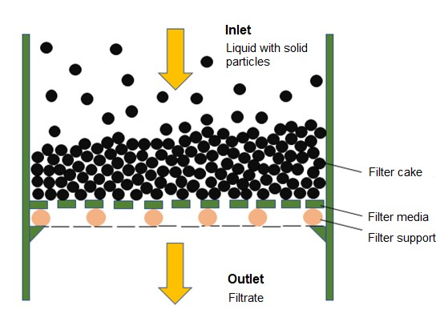
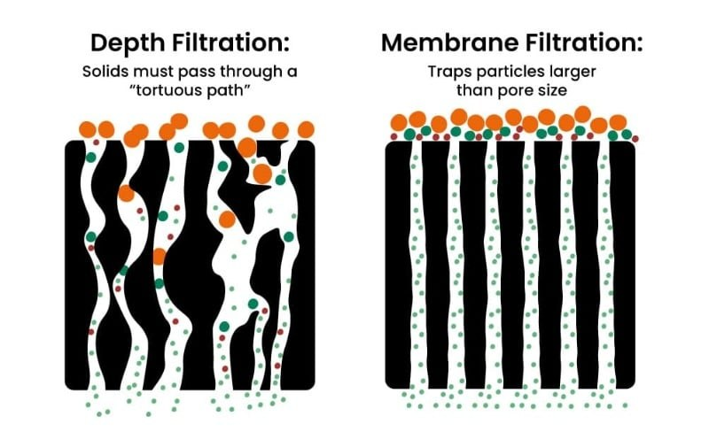
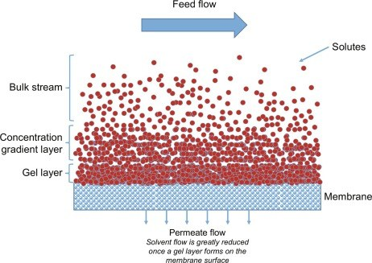
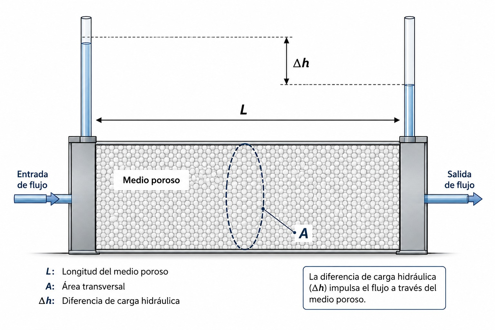
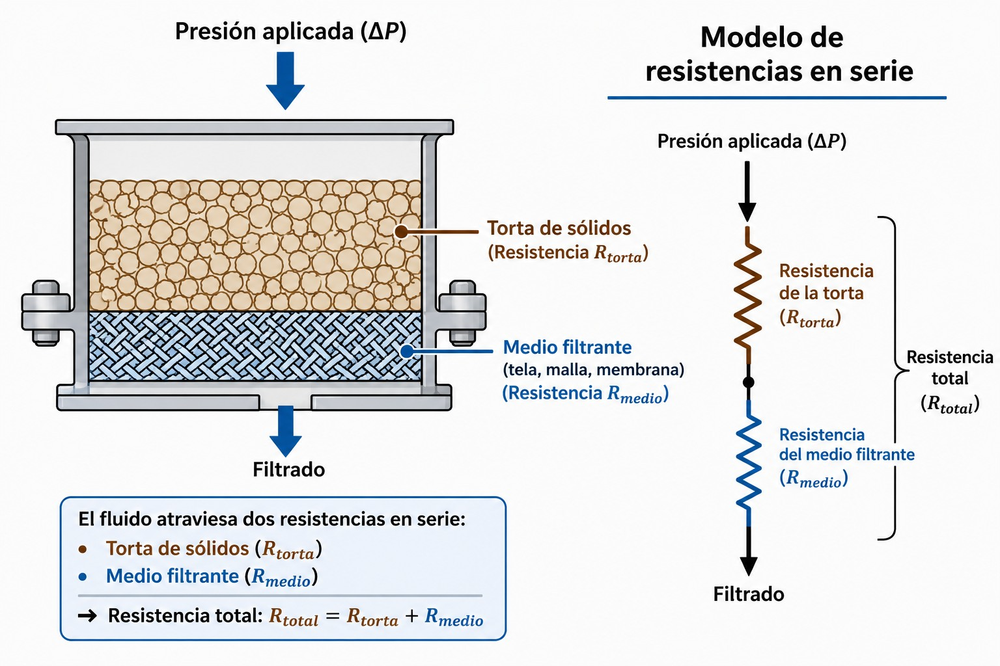
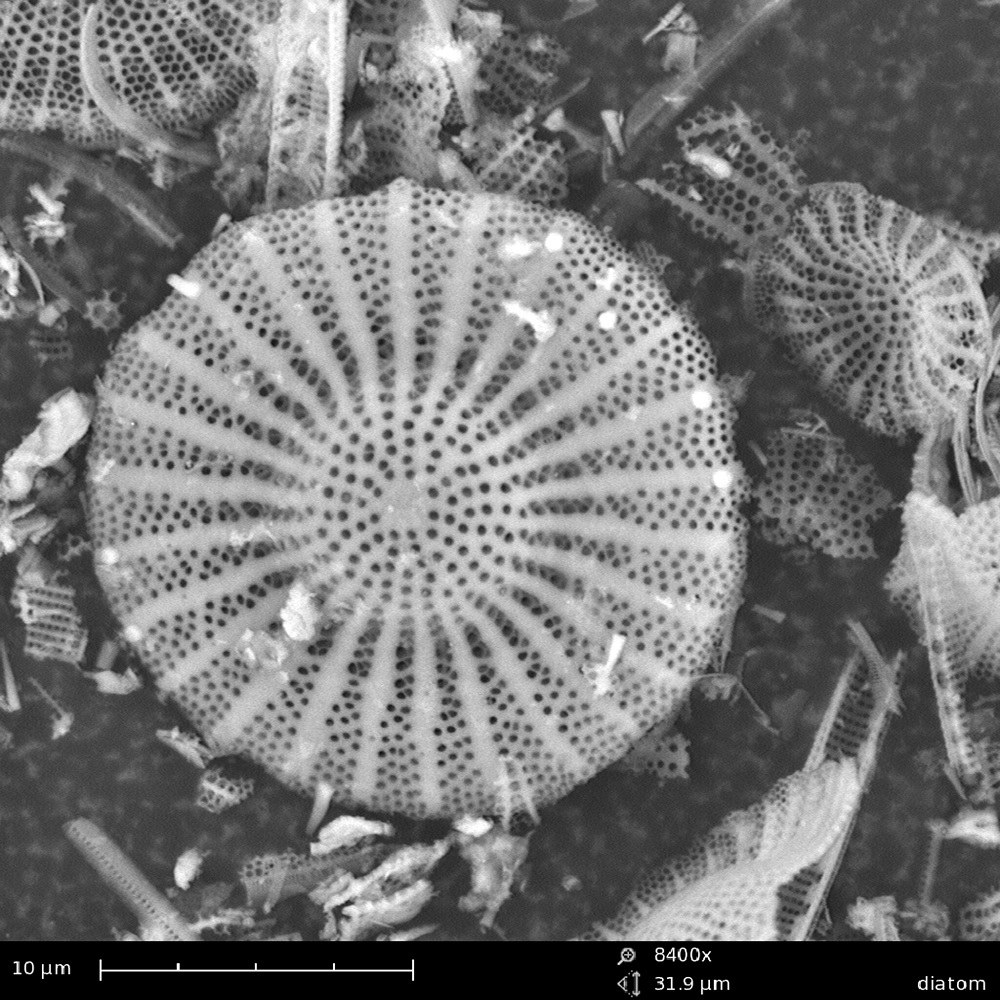
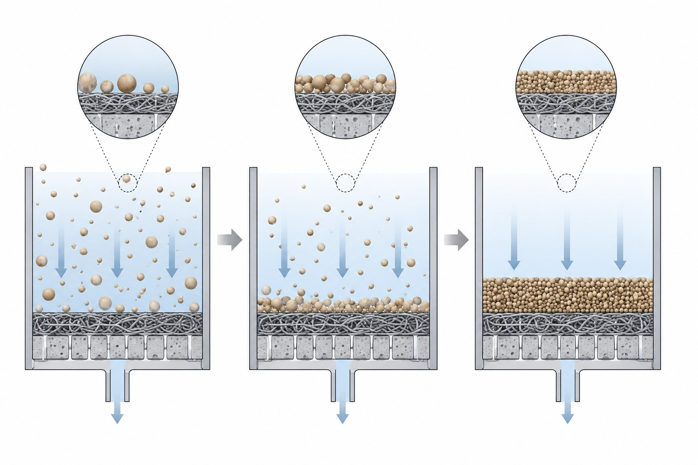
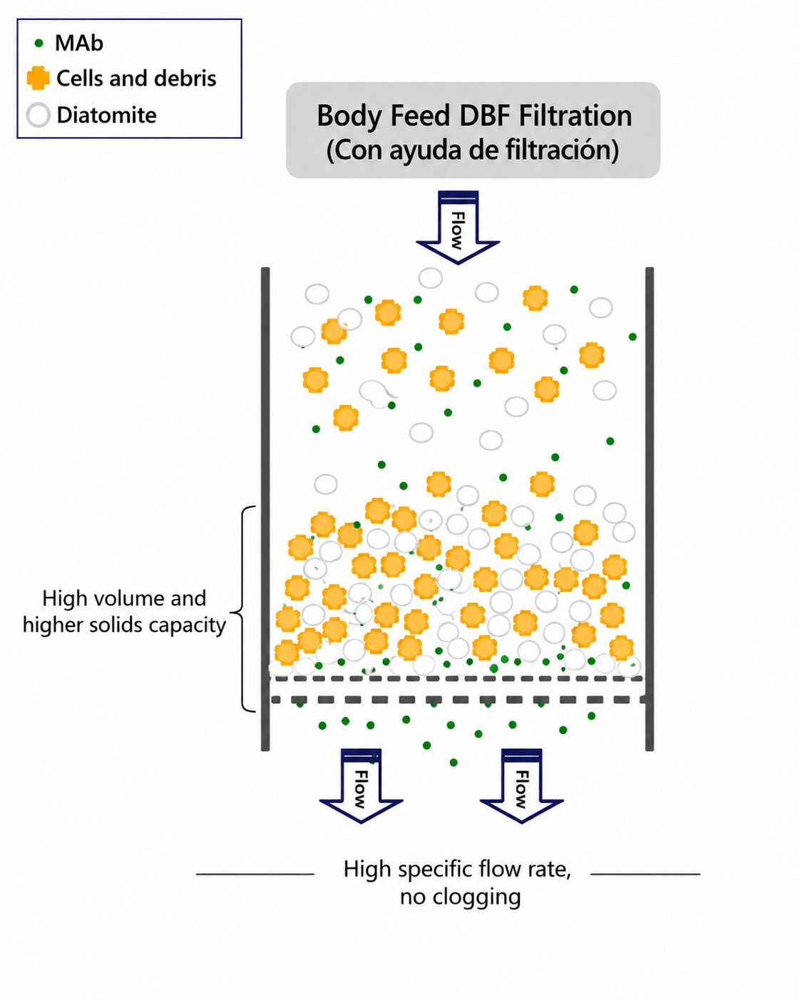

Universidad de los AndesIngeniería Química y de Alimentos
IQYA-2031 · Módulo 6 · Sesión 13
Filtración
Teoría, ciclo de operación y equipos de separación sólido-líquido
CursoProyecto de Operaciones Unitarias
Proyecto del semestrePlanta de pectina de grado alimentario
Sesión 13
Objetivos
01Distinguir los mecanismos de filtraciónFiltración con torta (superficial) vs. clarificación o filtración profunda
02Modelar el flujo con la Ley de Darcy y las resistencias en serieTorta ($R_c=\alpha w$) y medio filtrante ($R_m$); compresibilidad de la torta
03Analizar el ciclo: presión constante y caudal constanteCon un simulador interactivo del ciclo real de un filtro
04Seleccionar el equipo adecuadoFiltro prensa, filtro rotatorio de vacío y decantadora centrífuga
La filtración cierra el tren de separación de sólidos del proyecto: tras cristalizar o precipitar la pectina, hay que separarla del líquido. Elegir bien el equipo y su modo de operación define la productividad de toda la planta.
Fundamentos
¿Qué es filtrar?
Separar partículas sólidas de un fluido haciéndolo pasar a través de un medio poroso.
Definición
Fundamentos de la filtración
La filtración es una de las operaciones unitarias más antiguas y fundamentales de la ingeniería química: separar partículas sólidas de un fluido (líquido o gas) haciéndolo pasar a través de un medio poroso.
Escala ambiental
Aguas y minería
Tratamiento de aguas residuales a gran escala; procesos mineros y metalúrgicos.
Alimentos
Producción y proceso
Clarificación de jugos, cervezas y aceites; recuperación de sólidos valiosos como la pectina.
Farma & bio
Pureza y esterilidad
Purificación estéril de fármacos; bioprocesos y cosecha de biomasa.
Dos objetivos posibles y opuestos: a veces el producto valioso es el sólido (la torta), a veces es el líquido clarificado (el filtrado). El objetivo define el equipo.
Mecanismo 1 de 2
Filtración con torta (cake filtration)
Mecanismo dominante para suspensiones con alta concentración de sólidos (típicamente > 1 % en peso).
Los sólidos se acumulan en la superficieSe depositan sobre el medio filtrante, no dentro de él.
Forman una capa porosa: la tortaCrece con el tiempo y se vuelve el verdadero medio de filtración.
Filtra mejor… pero opone más resistenciaEl filtrado sale limpio por el soporte inferior.

La suspensión entra por arriba; la torta se forma sobre el medio y el filtrado sale por abajo.
Mecanismo 2 de 2
Clarificación o filtración profunda (depth filtration)
Se aplica a suspensiones muy diluidas (usualmente < 0.1 % en sólidos), donde el objetivo es un líquido extremadamente claro.
No se forma torta visibleLas partículas finas son atrapadas dentro de la matriz porosa.
Camino tortuosoQuedan retenidas por choque e intercepción a lo largo del lecho.
Vida útil limitadaTermina cuando los poros internos se saturan; se regenera o reemplaza.

Filtración profunda (camino tortuoso) frente a membrana (corte por tamaño de poro).
Cómo se alimenta el filtro
Filtración frontal vs. tangencial (cross-flow)
Frontal (dead-end)
El flujo choca de frente
Todo el líquido cruza el medio. La torta crece sin parar y el caudal cae: hay que detener y limpiar.
Tangencial (cross-flow)
El flujo barre la superficie
La corriente circula paralela al medio y arrastra los sólidos, limitando la torta. Base de las membranas.

En flujo tangencial, la corriente barre la membrana y controla la capa de gel.
El modelo físico
De Darcy a las ecuaciones de diseño
Flujo a través de un medio poroso, resistencias en serie y compresibilidad de la torta.
El punto de partida
Ley de Darcy
El flujo de un fluido a través de un medio poroso se describe con la Ley de Darcy:
$A$ — área de filtración · $L$ — espesor del medio
$\mu$ — viscosidad · $K$ — permeabilidad del medio

El gradiente de presión impulsa el flujo a través del medio poroso.
Reescribiendo Darcy
Flux, resistencia y la analogía con Ohm
Expresando Darcy con el flux ($J=Q/A$) y la resistencia ($R_m=L/K$), la filtración se lee como un circuito: un potencial vence una resistencia y produce un flujo.
Ley de OhmCircuito eléctrico
$$I=\frac{V}{R}$$
$I$ — corriente
$V$ — voltaje (potencial)
$R$ — resistencia (fija)
↔
FiltraciónFlujo por un medio poroso
$$J=\frac{\Delta P}{\mu\,R_m}$$
$J$ — flux (corriente)
$\Delta P$ — presión (potencial)
$\mu R_m$ — resistencia al flujo
La diferencia clave con un resistor: en filtración la resistencia no es fija — la torta la hace crecer con el tiempo ($R_c=\alpha w$). Por eso, aun con $\Delta P$ constante, el flux cae. Ese es el corazón del diseño.
Dos barreras al flujo
Resistencias de la torta y del medio filtrante
En la filtración con torta el fluido vence dos resistencias en serie:
Propiedad fija del equipo (tela, malla, membrana).
Torta
$R_c=\alpha\,w$ — creciente
$w$: masa seca por área; $\alpha$: resistencia específica. Domina rápidamente.

Modelo de resistencias en serie: $R_{total}=R_c+R_m$.
Cuando α no es constante
Compresibilidad de la torta
Muchas tortas —de partículas finas, orgánicas o floculadas— son compresibles: al subir la presión, las partículas se deforman, la estructura se compacta y $\alpha$ aumenta.
$$\alpha = \alpha_0\,(\Delta P_c)^{\,s}$$
$s=0$: incompresibleArena, diatomita. $\alpha$ no cambia con la presión.
$0<s<1$: compresibleLa mayoría de las tortas reales.
Conociendo $\mu$, $\Delta P$ y $c_s$ (medido aparte), se despejan $\alpha$ y $R_m$.
Para la compresibilidad $s$, se repite el ensayo a varias presiones y se ajusta $\alpha=\alpha_0(\Delta P_c)^{s}$.
Ayudas de filtración
Mejorando la filtrabilidad
Cuando la torta es fina, coloidal o compresible, se le añade estructura.
Materiales comunes
Ayudas de filtración
Materiales granulares, porosos e incompresibles que se añaden para dar estructura a la torta cuando las partículas son muy finas, coloidales o compresibles.

Tierra de diatomeasKieselgur. Esqueletos silíceos de diatomeas: enorme porosidad.Granular · Poroso · Incompresible
CelulosaFibras que arman una malla abierta; libre de sílice.Fibroso · Poroso · Incompresible
Estrategia 1
Pre-capa (precoat)
Antes de iniciar el proceso se hace pasar una suspensión de agua + ayuda de filtración por el filtro.
Forma una capa protectoraUna fina pre-capa se deposita sobre el medio filtrante limpio.
Evita el cegamientoImpide que las partículas finas taponen el medio.
Superficie de filtración idealBase uniforme y fácil de desprender al final.

La pre-capa protege el medio y da una superficie de filtración uniforme.
Estrategia 2
Body feed (dosificación en línea)
La ayuda de filtración se mezcla directamente con la suspensión antes de bombearla al filtro, y se incorpora a la torta a medida que se forma.
Estructura
Crea una torta abierta, rígida y porosa que no se compacta.
Efecto
Reduce la resistencia específica $\alpha$ y la compresibilidad $s$, aumentando el flujo a lo largo del ciclo.

El body feed arma una torta porosa que no se compacta.
Equipos
Del modelo al equipo real
Filtro prensa, filtro rotatorio de vacío y decantadora centrífuga.
Equipo batch por excelencia
Filtro prensa de placas y marcos
Operación de un filtro prensa de membrana automático (3D). Ver en YouTube
El equipo de filtración por lotes más común y versátil de la industria.
Un paquete de placas verticales y marcos huecos se prensa fuertemente (sistema hidráulico o de tornillo); una tela filtrante cubre cada placa. Opera a altas presiones (hasta ~15 bar).
1CierreEl paquete se sella herméticamente.
2FiltraciónSe bombea la suspensión; se forma la torta.
Para procesos que requieren operación continua y a gran escala.
Un gran tambor horizontal cubierto por el medio filtrante gira lentamente, con su parte inferior sumergida en el tanque de suspensión. El interior está segmentado y conectado a vacío.
1FormaciónLa sección sumergida forma torta por vacío.
2SecadoAl emerger, el aire seca la torta.
3LavadoAspersores lavan la torta en el giro.
4DescargaUna cuchilla la desprende cada vuelta.
Ventaja
Operación totalmente continua y automática, ideal para gran volumen.
Desventaja
Fuerza impulsora limitada al vacío ($\Delta P<1$ bar).
Cuando la presión no basta
Decantadora centrífuga
Cuando los sólidos son muy finos o gelatinosos —cegarían cualquier medio filtrante— la separación se hace por sedimentación acelerada, no por filtración: la fuerza centrífuga (miles de veces la gravedad) separa por diferencia de densidad.
Sin medio filtranteBowl de pared sólida: no hay torta que atraviese una tela, así que no se ciega.
Tornillo transportador (scroll)Gira a velocidad ligeramente distinta y arrastra los sólidos sedimentados hacia la salida.
Totalmente continuaAlimentación, clarificado y sólidos salen sin parar el equipo.
Principio de operación de una decantadora centrífuga. Ver en YouTube
Balance y usos
Decantadora: ventajas y aplicaciones
Ventajas
Continua y robusta
Operación continua y automática
Alto caudal; maneja lodos y finos
No hay medio que se ciegue
Puede separar 3 fases (sólido–agua–aceite)
Desventajas
Costo y humedad
Torta más húmeda que un filtro prensa
Alto consumo energético
Desgaste por abrasión y ruido
Aplicaciones
Lodos y bioprocesos
Deshidratación de lodos (PTAR)
Alimentos: almidón, aceite, jugos
Cosecha de biomasa (paso previo)
Frente a la centrífuga filtrante (canasta perforada, para cristales), la decantadora es de pared sólida: separa por sedimentación, ideal justo para los finos y lodos que cegarían un filtro.
La decisión de diseño
Criterios para seleccionar el equipo
No existe un «mejor» filtro; existe el filtro adecuado para una aplicación específica.
Si su suspensión es…
Y su objetivo es…
Considere…
Concentrada, por lotes
Una torta muy seca
Filtro prensa
Concentrada, gran volumen
Operación continua
Filtro rotatorio de vacío
Muy diluida (< 0.1 %)
Un líquido ultra-claro
Filtro de cartuchos / profundo
Finos, gelatinosos o lodos
Deshidratar en continuo
Decantadora centrífuga
Muy compresible / gelatinosa
Mejorar el flujo
Filtro prensa + ayuda filtrante
Aplicación industrial
Cosecha de células en biotecnología
Separar la biomasa (levaduras, bacterias) del caldo de fermentación es un paso crucial —y un desafío de filtración mayúsculo.
El problema
Las células son partículas muy pequeñas (1–10 µm) y biológicas, con resistencia específica $\alpha$ altísima y compresibilidad $s\approx 1$.
La torta se compacta apenas se aplica presión y bloquea casi por completo el flujo.
Con $s\approx1$, subir la presión sube $\alpha$ en la misma proporción: el caudal no mejora. Hay que atacar el problema antes del filtro.
Cómo lo resuelve la industria
Cosecha de células: soluciones
1 · Acondicionar
Floculación
Agentes químicos aglomeran las células en partículas más grandes y fáciles de filtrar.
2 · Dar estructura
Ayudas de filtración
Grandes dosis de diatomita como body feed crean una torta mixta porosa y rígida.
3 · Equipo adecuado
Equipos especializados
Filtros prensa para lotes pequeños; RVDF de pre-capa a gran escala; centrifugación/decantación como alternativa o paso previo.
La lección transversal: cuando la teoría dice que $\alpha$ y $s$ son el problema, la ingeniería ataca justamente esas variables antes de elegir el equipo.
Síntesis
Filtrar es gestionar una resistencia que crece con el tiempo
Darcy + resistencias en serie$J=\Delta P/\mu(R_c+R_m)$, con $R_c=\alpha w$ creciente.
El ciclo realCaudal constante → presión constante → parada y limpieza.
La compresibilidad manda$\alpha=\alpha_0\Delta P_c^{\,s}$; a veces más presión no ayuda.
El equipo se elige por la aplicaciónPrensa, tambor de vacío o decantadora.